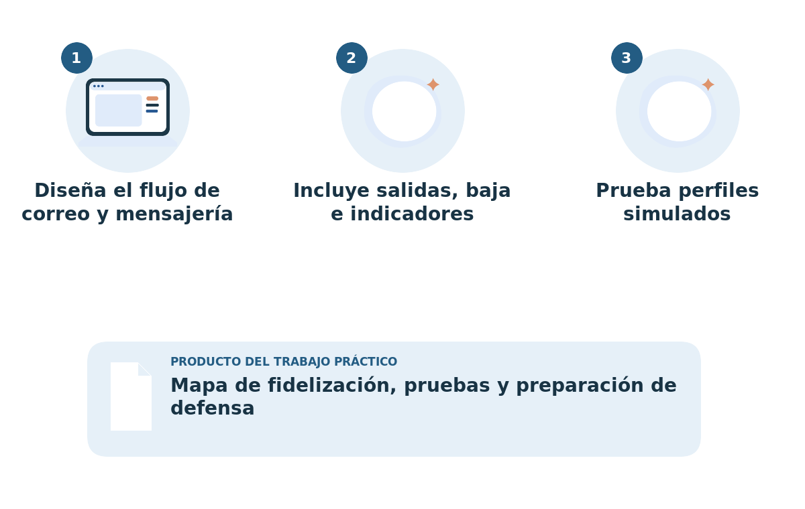

<div style="font-family: 'Segoe UI', Arial, sans-serif; color: #333; line-height: 1.6; max-width: 100%; margin-bottom: 20px;">
  <div style="background-color: #ffffff; background-image: linear-gradient(135deg, #ffffff 0%, #f8f9fa 100%); border: 1px solid #dee2e6; border-radius: 15px; padding: 25px 30px; box-shadow: 0 4px 12px rgba(0,0,0,0.05); position: relative; overflow: hidden;">
    <div style="position: absolute; left: 0; top: 0; bottom: 0; width: 6px; background: #0056b3;" aria-hidden="true"> </div>
    <div style="position: relative; z-index: 1;">
<h2 style="color: #1c3055; margin-top: 0; font-size: 1.4rem; font-weight: bold;">Entrega del Trabajo Práctico-Experimental de la Unidad 4</h2>
<p></p>

<p><strong>Asignatura:</strong> CRM y Seguimiento de clientes II<br>
<strong>Actividad: Plan de comunicación después de la compra</strong><br><strong>Evidencia:</strong> Un expediente con el recorrido de mensajes, las pruebas de tres clientes y cuatro indicadores de seguimiento.</p>
<p>En AndinaSoluciones, algunos clientes nuevos no reciben orientación y otros siguen recibiendo mensajes después de resolver su problema. También hay bajas por contactos diarios sin opción clara de cancelarlos. Diseña un seguimiento respetuoso por correo y mensajería. El caso es ficticio.</p>
<p><strong>Qué completar</strong></p>
<ol><li>Dibuja la bienvenida de los días 1 a 7, el seguimiento de los días 15 a 30 y el contacto tras sesenta días sin compra. Combina correo y mensajería con pausas razonables.</li><li>Incluye un enlace visible para cancelar mensajes o cambiar preferencias en cada recorrido. Detén la secuencia si el cliente compra de nuevo, resuelve su problema o pide atención de una persona.</li><li>Define al menos cuatro indicadores: continuidad del cliente, recompra, respuesta útil y cancelación de mensajes. Anota propósito, fórmula, unidad, periodo y fuente. Abrir un correo no demuestra satisfacción.</li><li>Prueba tres recorridos: un cliente que recompra el día 10, otro cuyo problema ya se resolvió y otro que cancela los mensajes. Registra cuándo sale cada uno de la secuencia.</li><li>Señala cuándo debe intervenir un asesor, por ejemplo ante una queja o una respuesta negativa. Usa el mapa y los resultados de las pruebas para preparar la defensa de tu propuesta en la evaluación final.</li><li>Comprueba que el dibujo se lea bien y descríbelo también con texto. Cita las lecturas y explica cómo verificaste las salidas y elegiste una frecuencia de contacto respetuosa.</li></ol>
<p><strong>Cómo entregar</strong></p>
<p>Entrega tu trabajo una sola vez al cierre de la semana 8. En esta Tarea de Moodle, selecciona <strong>Agregar entrega</strong>, adjunta tu evidencia y pulsa <strong>Guardar cambios</strong>. Si aparece <strong>Enviar tarea</strong>, púlsalo y comprueba el estado.</p>
<p><strong>Nombre del expediente:</strong> Apellido_Nombre_Trabajo_experimental_Unidad_4.</p>
<p><strong>Formato:</strong> Entrega el documento y el dibujo legible. Puedes adjuntar una explicación grabada como apoyo, dentro de la misma entrega.</p>
<p>Conserva el registro original del caso y anota las correcciones en tu expediente. Entrega el trabajo autónomo por separado.</p>
<details><summary style="color:#0056b3;font-weight:bold;cursor:pointer;">Rúbrica de la práctica · 16 puntos</summary><div style="overflow-x:auto;"><table class="table" style="width:100%;border-collapse:collapse;font-size:.9rem;"><thead><tr><th scope="col" style="padding:8px;background:#eef4fb;text-align:left;">Criterio y puntaje máximo</th><th scope="col" style="padding:8px;background:#eef4fb;text-align:left;">Completo (4 puntos · 100 %)</th><th scope="col" style="padding:8px;background:#eef4fb;text-align:left;">Adecuado (3 puntos · 75 %)</th><th scope="col" style="padding:8px;background:#eef4fb;text-align:left;">Parcial (2 puntos · 50 %)</th><th scope="col" style="padding:8px;background:#eef4fb;text-align:left;">Inicial (1 punto · 25 %)</th><th scope="col" style="padding:8px;background:#eef4fb;text-align:left;">Ausencia (0 puntos · 0 %)</th></tr></thead><tbody><tr><td style="padding:8px;border-bottom:1px solid #dee2e6;vertical-align:top;">1. Pertinencia del análisis <strong>(4 puntos)</strong></td><td style="padding:8px;border-bottom:1px solid #dee2e6;vertical-align:top;">Diseña bienvenida, seguimiento y recuperación por correo y mensajería, con pausas, cancelación de mensajes y atención personal.</td><td style="padding:8px;border-bottom:1px solid #dee2e6;vertical-align:top;">Cubre las tres secuencias y las garantías éticas principales con leves detalles de ajuste en intervalos o criterios de traspaso.</td><td style="padding:8px;border-bottom:1px solid #dee2e6;vertical-align:top;">Presenta un flujo incompleto, omite la opción clara de cancelación de mensajes o mantiene frecuencias de envío invasivas.</td><td style="padding:8px;border-bottom:1px solid #dee2e6;vertical-align:top;">Hay un intento evaluable. Propone un esquema genérico sin conexión entre correo y mensajería ni criterios éticos de privacidad o respeto al cliente.</td><td style="padding:8px;border-bottom:1px solid #dee2e6;vertical-align:top;">No presenta evidencia del criterio «Pertinencia del análisis» que permita evaluarlo.</td></tr><tr><td style="padding:8px;border-bottom:1px solid #dee2e6;vertical-align:top;">2. Aplicación conceptual <strong>(4 puntos)</strong></td><td style="padding:8px;border-bottom:1px solid #dee2e6;vertical-align:top;">Comprueba la salida de los tres clientes y define los indicadores con fórmula, unidad, periodo y fuente.</td><td style="padding:8px;border-bottom:1px solid #dee2e6;vertical-align:top;">Comprueba los perfiles simulados y define los indicadores con omisiones menores en alguna fórmula o fuente de dato.</td><td style="padding:8px;border-bottom:1px solid #dee2e6;vertical-align:top;">Omite la prueba de salida ante caso resuelto o confunde correos abiertos con continuidad real del cliente sin fórmulas definidas.</td><td style="padding:8px;border-bottom:1px solid #dee2e6;vertical-align:top;">Hay un intento evaluable. No comprueba condiciones de salida ni formula indicadores verificables de continuidad del cliente.</td><td style="padding:8px;border-bottom:1px solid #dee2e6;vertical-align:top;">No presenta evidencia del criterio «Aplicación conceptual» que permita evaluarlo.</td></tr><tr><td style="padding:8px;border-bottom:1px solid #dee2e6;vertical-align:top;">3. Calidad del entregable <strong>(4 puntos)</strong></td><td style="padding:8px;border-bottom:1px solid #dee2e6;vertical-align:top;">Integra en un solo expediente limpio el mapa visual legible, la tabla de recorrido de perfiles y las fichas técnicas de métricas de forma reproducible.</td><td style="padding:8px;border-bottom:1px solid #dee2e6;vertical-align:top;">Presenta todos los componentes con pequeños detalles visuales en el diagrama o redacción técnica.</td><td style="padding:8px;border-bottom:1px solid #dee2e6;vertical-align:top;">Entrega un mapa ilegible o tablas incompletas que impiden seguir la lógica completa del recorrido por varios canales.</td><td style="padding:8px;border-bottom:1px solid #dee2e6;vertical-align:top;">Hay un intento evaluable. Entrega archivos incompletos sin mapa visual ni pruebas de recorrido de los perfiles solicitados.</td><td style="padding:8px;border-bottom:1px solid #dee2e6;vertical-align:top;">No presenta evidencia del criterio «Calidad del entregable» que permita evaluarlo.</td></tr><tr><td style="padding:8px;border-bottom:1px solid #dee2e6;vertical-align:top;">4. Uso de fuentes y referencias <strong>(4 puntos)</strong></td><td style="padding:8px;border-bottom:1px solid #dee2e6;vertical-align:top;">Sustenta el diseño en Fonseca Romero y colaboradores (capítulo 5) y Arango Aramburu y colaboradores aplicando formato de citas de la guía y rotulando los datos como simulados.</td><td style="padding:8px;border-bottom:1px solid #dee2e6;vertical-align:top;">Cita las obras de la unidad y aclara el carácter ficticio con errores menores en el formato de la lista final.</td><td style="padding:8px;border-bottom:1px solid #dee2e6;vertical-align:top;">Relaciona parcialmente el flujo con las lecturas asignadas o presenta fallas frecuentes de citación.</td><td style="padding:8px;border-bottom:1px solid #dee2e6;vertical-align:top;">Hay un intento evaluable. Presenta referencias inventadas, reproduce contenidos sin atribución o expone el caso simulado como experiencia real.</td><td style="padding:8px;border-bottom:1px solid #dee2e6;vertical-align:top;">No presenta evidencia del criterio «Uso de fuentes y referencias» que permita evaluarlo.</td></tr></tbody></table></div></details>
    </div>
  </div>
</div>

